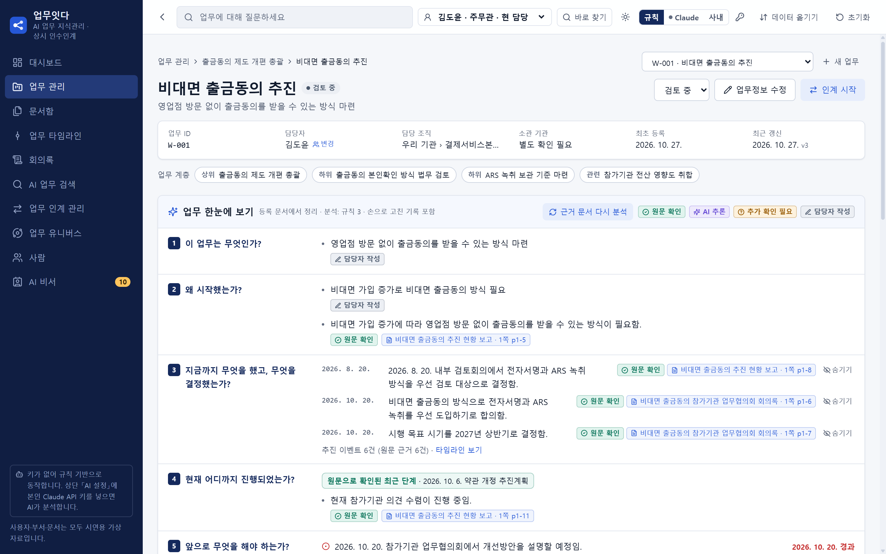
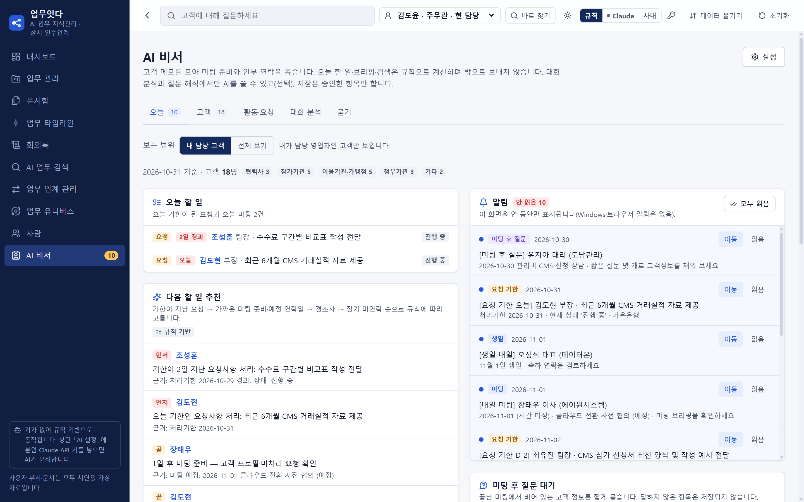

무엇을, 왜,
어디까지 했는지
- 문서를 올리면 결정·일정·할 일이 업무에
- 5문항으로 업무 한눈에
- 담당이 바뀌면 이 화면이 곧 인계 자료

AI의 말마다
붙는 출처
- 앱이 원문과 직접 대조
- 확인 안 되면 「추가 확인 필요」
- 사람이 승인한 것만 기록

오늘 챙길 일부터,
AI 비서
- 오늘 할 일과 다음 할 일 추천
- 미팅 전 브리핑, 말로 묻기
- 대화에서 요청·선호·기념일 제안

일이 있는 곳이라면, 어디든
정기 인사가 있는 기관담당이 바뀌어도 업무 그대로
프로젝트로 일하는 팀회의록이 담당·기한 붙은 할 일로
여러 부서가 얽힌 일연결을 팀·부서 지도로 한눈에
사람을 많이 만나는 일오늘 챙길 일은 AI 비서가
파일 하나에서 조직 전체로
쓰는 만큼 넓어지는 지도
지금
나더블클릭하면 내 업무 지도지금
우리 팀파일을 합치면 팀 지도다음
조직사내 로그인·문서함·전자결재 연결그다음
기관 전체사내 AI로 자료는 안에서만설치·서버·로그인 없음HTML 파일 하나, 더블클릭
AI 키가 없어도 시작규칙으로 먼저, AI는 원할 때
쓰던 문서 그대로PDF·한글(HWPX)·글을 올리면 끝
검증(2026-10-31): 단위 시험 736건, Chrome·Edge 화면 점검 22/22, 실제 AI 시험 11건 통과(가상 자료) · 「다음」 이후는 구현 전 계획 · 실제 업무 자료·다른 업종은 미검증 · 스캔 PDF는 「별도 확인 필요」 표시 · AI 키는 브라우저에 저장되므로 공용 PC 사용 금지 · 화면 속 사람·기관·문서는 모두 가상